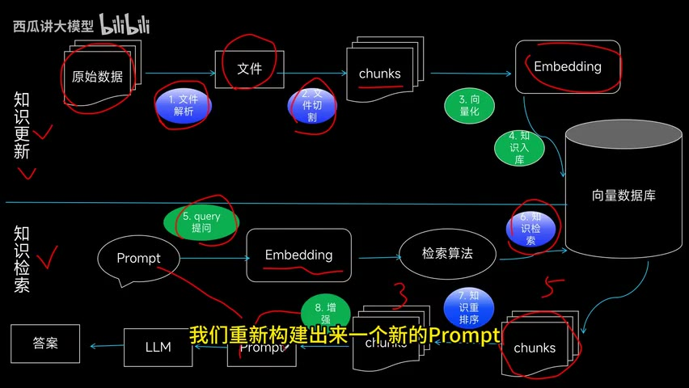

原视频 · 在线回看
点击后联网加载 B 站播放器；本地不下载整段视频。

原视频 · 在线回看
点击后联网加载 B 站播放器；本地不下载整段视频。
来源：西瓜讲大模型｜RAG 开发中的技术选择 · 6 分 22 秒 · 深度阅读
准备做一个能回答内部资料的助手时，眼前会出现许多工具名称：文档解析、向量模型、数据库、重排序、语言模型，还有开发框架。把这些名字全部记下来，仍然可能不知道一个问题到底怎样变成答案。我们先走完一次正常过程，再看每件工具负责哪一步，技术选择就会清楚得多。
这里讨论的是西瓜讲大模型在项目交付中使用过的一套分工。具体模型和产品名称属于录制时期的选择，可以帮助理解各个位置需要什么能力；它们无法直接决定今天的最佳方案。真正值得带走的，是知识管理、在线问答和效果评估怎样相互配合。
假设我们已经拿到一批原始文件。它们可能是 PDF，也可能是其他文档。第一步要把文件解析成程序能够处理的内容：识别正文、段落和其他必要信息。文件出现在硬盘里，并不意味着检索程序已经知道里面写了什么。尤其是由图片构成的 PDF，还需要先识别图片中的文字，才能进入后面的文本处理。
整份长文档直接拿来检索，常常不够方便。于是我们把它切成较小的片段，称为 chunk。每个片段再经过 embedding 模型，转换成一组用于表示内容的数字，也就是向量。把这些向量与对应片段存入检索系统，以后就能根据问题去寻找含义接近的内容。我们在这里保存的既有搜索所用的表示，也必须有能够交给模型阅读的原文；只剩一组数字，模型无法从中直接读出那条规定或说明。
这一段流程发生在资料进入知识库时。资料增加、删除或修改之后，知识库也要相应更新。例如旧文件已经被替换，检索仍然返回旧片段，就会让回答继续使用过期内容。因此，知识管理除了第一次导入，还要负责后续维护。把“文件已经上传”当作“知识库已经正确更新”，中间就容易漏掉这些步骤。
用户发来问题时，系统同样把问题转换成向量，到已建立的检索数据中寻找相关内容。假设这次返回五份候选片段，它们可能都与主题有关，但相关程度不一样。某些片段只有相似用词，另一些片段才真正解释了用户的问题。候选数量够多，仍然不等于每份都值得交给回答模型。
于是增加重排序，也叫 rerank。它把问题与各份候选内容进一步比较，重新安排优先级。这里用“五份候选保留三份”来解释这一步的作用：先扩大寻找范围，再从找到的内容里细选。五与三只是示例数字。具体返回多少片段、保留多少片段，需要结合问题、文档长度和实际效果决定。
最后，把原问题、选中的资料和回答要求放在一起，组成新的 prompt，也就是这次交给语言模型的完整输入。模型阅读这些内容之后生成答案。到这里我们就能看出，embedding 模型负责帮助查找，重排序模型负责比较候选，语言模型负责理解资料并组织答复。它们虽然都可能叫“模型”，承担的工作却不同，不必把所有能力想象成由同一个模型一次完成。
图里上半部分表示资料如何进入知识库，下半部分表示提问如何得到答案。看下半部分时，可以从左侧的 query 提问开始，沿着 embedding 和检索算法走向数据库，再跟着取回的片段经过重排序，回到 prompt 与语言模型。这样读，就能把“准备资料”和“使用资料”两件事分开。
按照刚才的过程，这套系统可以分成三个相对独立的部分。第一个部分负责资料管理，让文件被正确解析、切分、存储，并跟随后续改动更新。第二个部分负责知识问答，接收用户问题、检索资料、选择候选并调用语言模型。第三个部分负责评估，检查这套问答是否真的有用。
把评估单独列出来很重要。一个系统可以把所有步骤都运行完，页面上也能出现一段通顺的回答，但这只说明程序没有在中途停止。它是否找对资料、是否遗漏必要条件、回答是否有依据，都还没有得到确认。评估为这些问题安排明确的检查方法，帮助我们知道某次修改究竟改善了什么。
| 部分 | 主要输入 | 需要完成的工作 | 交给后面什么 |
|---|---|---|---|
| 知识管理 | 原始文件及文件变更 | 解析、切分、向量化、增删改 | 可检索且保持更新的资料 |
| 知识问答 | 用户问题与知识库 | 检索、重排序、组织模型输入 | 回答及其所用资料 |
| 效果评估 | 问题、回答和评价要求 | 人工检查或模型辅助评分 | 可供比较的结果与失败案例 |
这张表保留了开发时很实用的边界：改动文件解析时，主要影响资料怎样进入知识库；改动回答模型时，主要影响资料怎样被使用。两种改动最后都应接受相同任务的评估，否则我们很难知道，是资料变好了，还是表达变得更流畅。
选择工具之前，需要确认哪些资料可以发送给外部服务，哪些必须留在指定环境内。这个限制会同时影响文档解析、向量化、回答和评估。即便最后的回答模型在本地运行，如果前面的 PDF 解析把完整文件发给外部服务，资料仍然已经离开本地。需要沿整个处理过程检查，不能只看最后一个模型放在哪里。
对需要本地处理的 PDF，这里给出的思路是结合版面目标检测与 OCR。版面检测帮助找到页面中的内容区域，OCR 负责识别区域里的文字，随后再整理成适合检索的内容。对允许使用外部服务的资料，也可以考虑让多模态模型读取页面。多模态模型能够处理图像与文字，但它读取结果是否保留了表格关系、标题层级和数值条件，同样需要检查。
这两种情况可以理解为不同的数据处理许可。普通客服资料也可能包含个人信息或业务秘密，不能仅根据“客服”这个场景名称，就认定任何外部服务都可使用。允许发送什么，应由资料性质和实际要求决定。无论采用哪一条路线，目标都一致：让后续检索获得准确、可用且获准处理的内容。
开发框架方面，这里使用 LangChain、LlamaIndex 作为例子。框架提供连接文档处理、检索和模型调用的现成部件，可以减少一些重复实现。不过，采用框架以后，资料仍然要被正确解析，查询仍然要被正确处理。框架帮我们组织程序，不会自动替我们判断每一步的结果是否符合任务。
向量模型要同时用于资料和问题，使两边的表示能够放在同一个比较体系中。这里建议优先考虑与所选模型服务配套的 embedding 选项，这可以作为工程选择的起点，但“同一家提供”本身无法保证检索更好。对于这条流程，真正必须留意的是资料和查询使用的向量表示是否一致，以及它对当前语言、文档和问题的表现如何。
数据库或检索工具负责保存向量并寻找相近内容。Faiss 与 Milvus 是这里提到的两个例子：前者提供向量相似度检索能力，后者更接近完整的向量数据库服务。数据规模会影响选择，运行资源、更新方式和服务需求也会影响选择。不能只根据一条记录数分界，就判断某个工具一定足够。这样的工具名称适合放回它承担的工作位置理解，暂时无需背成统一采购清单。
回答模型与重排序模型也要遵守同样的数据处理限制。需要本地运行时，可以选择能够在指定环境部署的模型；允许使用在线服务时，候选范围会扩大。这里列举的 Qwen、GLM 与 GPT 系列，是录制时的选项。选定之后仍要测试：模型读到这些资料能否保留条件、能否按照要求回答，以及等待时间能否接受。
前后端承担的是另一层工作。前端向用户提供上传、提问和查看回答的页面，后端接收请求并组织资料处理与模型调用。这里给出的组合包括 Vue 和 FastAPI。若需求较简单，也提到可以使用 Coze、Dify 这样的应用搭建平台。平台能够缩短搭建过程，但没有取消知识管理、问答和评估这三项工作；它们只是以另一种界面让我们配置这些步骤。
效果评估可以由人完成，也可以使用模型辅助。人工评分需要先说明什么样的回答算好；模型评分也一样，需要把任务、回答和评价要求交给评分模型。评分模型不会因为负责“评估”，就自动知道这个产品真正重视什么。评价哪些方面、怎样判定，仍然要由我们根据任务写清楚。
模型辅助评估还有一个容易遗漏的资料流向：为了判断回答，评分模型可能需要读取用户问题、检索片段和最终答案。前面的问答过程全部在本地运行，最后若接上在线评分服务，相关内容仍可能被发送出去。使用现成评估工具时，要查看它实际调用哪些模型。工具本身开源，与它默认连接的模型是否在本地运行，是两件需要分别确认的事。
至此，我们已经从一份原始文件走到用户答案，又从答案回到评估。理解这条过程之后，再读工具列表，名字就有了位置。我们能说出某项工具处理什么输入、交出什么结果，以及它失败时会怎样影响用户。这比记住一套组合，更能帮助我们理解以后遇到的不同 RAG 系统。
RAG 包含资料准备、在线问答和效果检查；技术选择要服务于这三项工作，并沿整条流程遵守资料处理要求。
文件先被解析、切分和向量化，形成可搜索的知识。用户提问后，系统检索并重排片段，再交给语言模型回答。评估检查回答是否有用，也为后续改动提供比较依据。每个步骤都可能处理原始资料，因此数据流向需要从头看到尾。
补充练习：沿着图走一遍，分别说出原始文档、文档片段、向量、检索结果和最终回答在哪里出现。然后任选一步，想想该步骤交错了内容会给后面带来什么问题。只要能把这一条因果关系讲清楚，工具名就不再只是需要背诵的词。